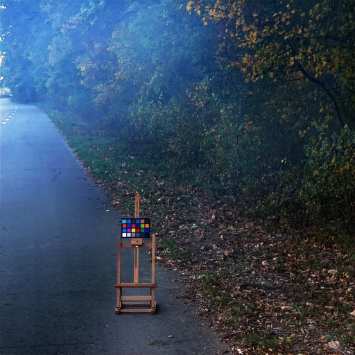

模型结构
Tiramisu 密集连接 U-Net 生成器 + 70×70 PatchGAN 判别器；L1 重建、VGG 感知与对抗损失加权联合训练。
Graduation Project · 毕业设计
雾霾会降低图像对比度与色彩保真度，影响视觉算法的上游输入质量。本项目实现了一套 条件生成对抗网络（SE-CGAN）完成单幅图像去雾： Tiramisu 密集连接 U-Net 生成器负责重建无雾图像， 70×70 PatchGAN 判别器配合 L1 + VGG 感知 + 对抗损失约束纹理真实性， 在 RESIDE 与 O-HAZE 数据集上完成训练与评测。
训练完成后，模型最初以 PyQt6 开发了 Windows 桌面演示程序，可以在本地加载权重、 对任意雾图直接查看去雾效果。为了让展示不依赖安装环境、任何人点开链接就能体验， 我把项目迁移上云：重构为 FastAPI 推理服务，以 Docker 容器部署在腾讯云 CloudBase 云托管上—— 就是下面这个你可以直接上传图片体验的服务。
Live Demo — 在线演示
在线演示部署在腾讯云 CloudBase 云托管（Docker 容器 + CPU 推理），由去雾服务自带的演示页承载： 支持拖拽上传与示例图一键体验、原图/结果滑动对比、推理耗时显示与结果下载。 服务冷启动时首次访问约需 10–40 秒，之后秒级返回；图片仅在推理时临时使用，不会被保存。
演示服务部署中 —— dehaze-api 部署到 CloudBase 后，把服务域名填入
js/config.js 的 DEHAZE_DEMO_URL，全站「在线体验」入口即自动开放并直跳演示页。


Tiramisu 密集连接 U-Net 生成器 + 70×70 PatchGAN 判别器；L1 重建、VGG 感知与对抗损失加权联合训练。
RESIDE 合成雾图 + O-HAZE 真实雾图训练；SOTS 测试集 PSNR 28.05 / SSIM 0.9707，与训练工程逐像素一致性校验。
PyQt6 桌面端（Windows）起步 → 权重导出与一致性校验 → FastAPI 接口（multipart 上传，返回 PNG）→ Docker → 腾讯云 CloudBase 云托管；前端预缩放省流量，冷启动预热。
PyQt6 加载权重，本地直接看效果。
FastAPI 推理接口，前后端契约冻结。
Docker 打包，环境一致可迁移。
CloudBase 云托管，链接即体验。